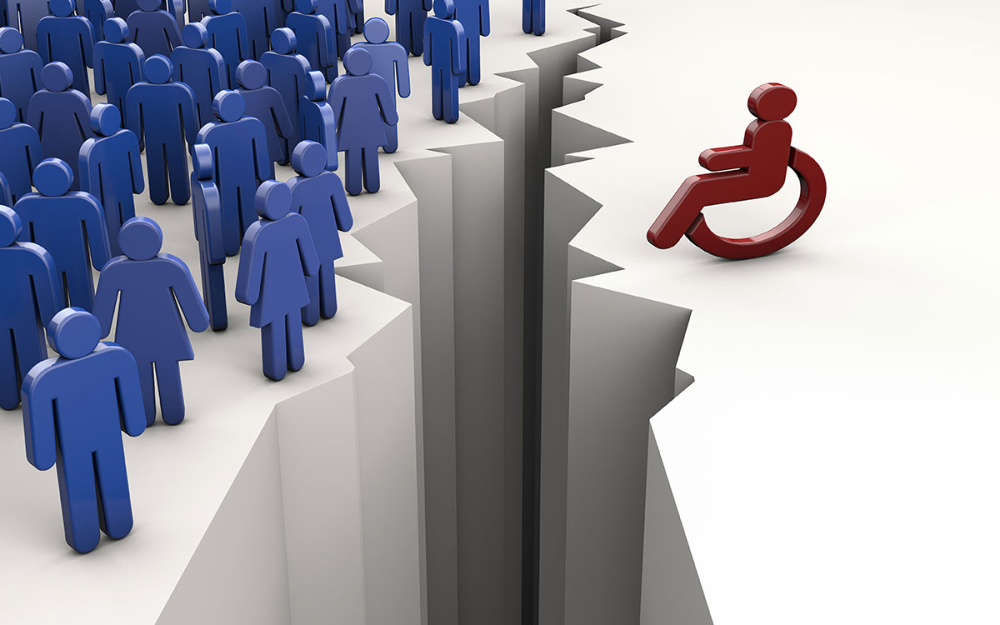

Qu'est-ce que la discrimination ?
La discrimination est un comportement social qui produit différents types d'inégalités. Lorsque nous parlons de discrimination, nous nous référons à une conduite sociale réalisée par des individus, des institutions, des organisations ou tout acteur social, qui produit et reproduit par action ou omission certaines inégalités de type économique, social, de travail, affectif ou politique, contre un certain type d'individus, de groupes humains ou d'institutions.
En d'autres termes, la discrimination consiste à refuser à un individu ou à un groupe humain l'accès à certains droits, biens ou services, sans avoir de raison valable pour le faire. Il s'agit d'un phénomène social qui provoque un grand malaise chez ceux qui le subissent et appauvrit le traitement entre les êtres humains, le rendant moins égalitaire, moins démocratique et donc moins juste.
La discrimination va généralement de pair avec l'ignorance, les préjugés et autres raisons subjectives de préférer injustement un sujet ou un groupe humain à d'autres. Ce n'est certainement pas le cas lorsqu'il existe des raisons concrètes et individuelles de rejeter un individu, sans généraliser à tous ceux qui ont le même statut social.
Il existe dans le monde de nombreuses traditions, lois, idées, politiques et pratiques discriminatoires, mais aussi de nombreuses institutions qui les combattent dans différents pays. La discrimination va à l'encontre de la richesse d'une humanité plurielle et diverse qui accepte ses différences dans la paix.
Les causes de la discrimination
Les causes de la discrimination ne sont pas faciles à cerner. Beaucoup peuvent être héritées des générations précédentes, inscrites dans la culture locale comme une sorte d'inimitié ancestrale ou de rejet historique. Dans d'autres cas, elles sont enracinées dans des expériences personnelles négatives qui, au lieu d'être résolues, restent et se transmettent sous forme de préjugés.
Dans tous les cas, la généralisation d'une mauvaise expérience ou les préjugés gratuits à l'égard d'autrui ne sont guère plus que des formes agressives d'ignorance, car au lieu de se permettre de connaître l'autre et d'apprendre de lui, on le rejette d'emblée.
Conséquences de la discrimination
Les conséquences les plus évidentes de la discrimination sont la douleur, la gêne, la colère, de la part de la personne qui subit l'injustice. Cela peut sembler peu, mais à long terme, les attitudes discriminatoires engendrent leur contrepartie, se retournant comme un boomerang contre celui qui discrimine.
Dans certains cas, les personnes discriminées ont tendance à en vouloir et à se souvenir de la personne qui les a discriminées, et peuvent alors se tourner vers le rôle de l'auteur de la discrimination pour se venger, perpétuant ainsi le cycle néfaste de la discrimination.